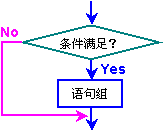
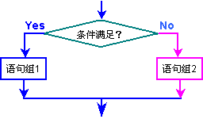
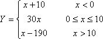

分支结构是一种非常重要的程序结构，也是实现程序功能选择所必要的程序结构。由于汇编语言需要书写转移指令来实现分支结构，而转移指令肯定会破坏程序的结构，所以，编写清晰的分支结构是掌握该结构的重点，也是用汇编语言编程的基本功。
在程序中，当需要进行逻辑分支时，可用每次分二支的方法来达到程序最终分多支的要求，也可是用地址表的方法来达到分多支的目的。
一、显示转移指令实现的分支结构
在高级语句中，分支结构一般用IF语句来实现，在汇编语言中，课用无条件转移指令或条件转移指令实现的分支结构。如图6.2给出了二种常用的分支结构。
在编写分支程序时，要尽可能避免编写“头重脚轻”的结构，即：当前分支条件成立时，将执行一系列指令，而条件不成立时，所执行的指令很少。这样就使后一个分支离分支点较远，有时甚至会遗忘编写后一分支程序。这种分支方式不仅不利于程序的阅读，而且也不便将来的维护。
所以，在编写分支结构时，一般先处理简单的分支，再处理较复杂的分支。对多分支的情况，也可遵循“由易到难”的原则。因为简单的分支只需要较少的指令就能处理完，一旦处理完这种情况后，在后面的编程过程中就可集中考虑如何处理复杂的分支。

(a) if … endif结构
(b) if…else…endif结构
例6.5 已知字节变量CHAR1，编写一程序段，把它由小写字母变成大写字母。
解：
DATA1 SEGMENT … CHAR1 DB ? … DATA1 ENDS CODE1 SEGMENT … MOV AL, CHAR1 CMP AL, ‘a’ JB next CMP AL, ‘z’ JA next SUB CHAR1, 20H ;指令AND CHAR1, 0DFH也可以 next: … … CODE1 ENDS
例6.6 编写一程序段，计算下列函数值。其中：变量X和Y是有符号字变量。

解：
DATA1 SEGMENT … X DW ? Y DW ? … DATA1 ENDS CODE1 SEGMENT … MOV AX, X CMP AX, 0 JGE case23 ADD AX, 10 ;第一种情况的计算结果 JMP result case23: CMP AX, 10D JG case3 MOV BX, 30D IMUL BX ;第二种情况的计算结果 JMP result case3: SUB AX, 9 ;第三种情况的计算结果 result: MOV Y, AX ;把计算结果保存到变量Y中 … CODE1 ENDS
例6.7 把下列C语言的语句改写成等价的汇编语言程序段(不考虑运算过程中的溢出)。
If (a+b > 0 && c%2 == 0) a = 62;
else a = 21;
其中：变量a，b和c都是有符号的整型(int)变量。
解：
DATA1 SEGMENT … A? DW ? B DW ? C? DW ? … DATA1 ENDS CODE1 SEGMENT … MOV AX, A ADD AX, B JLE _ELSE ;ADD指令会改变算术标志位 TEST C, 1 ;C%2==0，也就是：看C的最低位是否为0 JNZ _ELSE MOV A, 62D JMP NEXT _ELSE:?MOV A, 21D NEXT: … CODE1 ENDS
例6.8 用地址转移表实现下列C语言的switch语句，其中：变量A和B是有符号的整型(int)变量。
switch (a%8)
{case 0: b = 32;
break;
case 1:
case 2: b = a + 43;
break;
case 3: b = 2*a;
break;
case 4: b--;
break;
case 5:
case 6:
case 7: printf(“Function 5_6_7”);
break;
}
解：
DATA1 SEGMENT … A DW ? B DW ? Table DW case0. case12, case12, case3 DW case4, case567, case567, case567 MSG DB 'Function 5_6_7$' … DATA1 ENDS CODE1 SEGMENT … MOV AX, A MOV BX, AX AND BX, 7 ;得到BX的低三位，实现a%8的计算 SHL BX, 1 ;由于地址表是字类型，其下标要乘2 JMP Table[BX]? ;利用地址表实现多路转移 case0: MOV B, 32D JMP next case12: ADD AX, 43D MOV B, AX JMP next case3: SHL AX, 1 MOV B, AX JMP next case4: DEC? B JMP next case567: LEA?DX, MSG MOV AH, 9 INT 21H JMP next next: … CODE1 ENDS
用地址表实现多路转移的关键在于：转移入口的地址表和转移情况可整数化。如果这二个要求有一个不满足，或很难构造，则无法使用该方法。